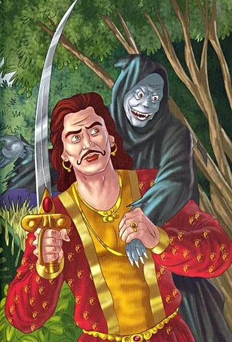
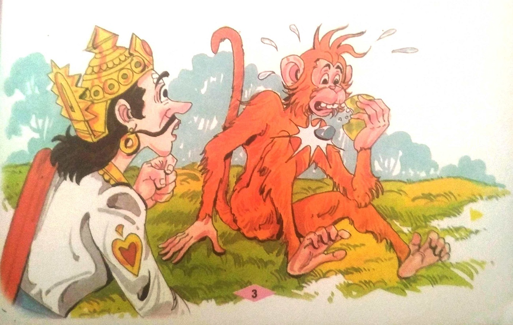
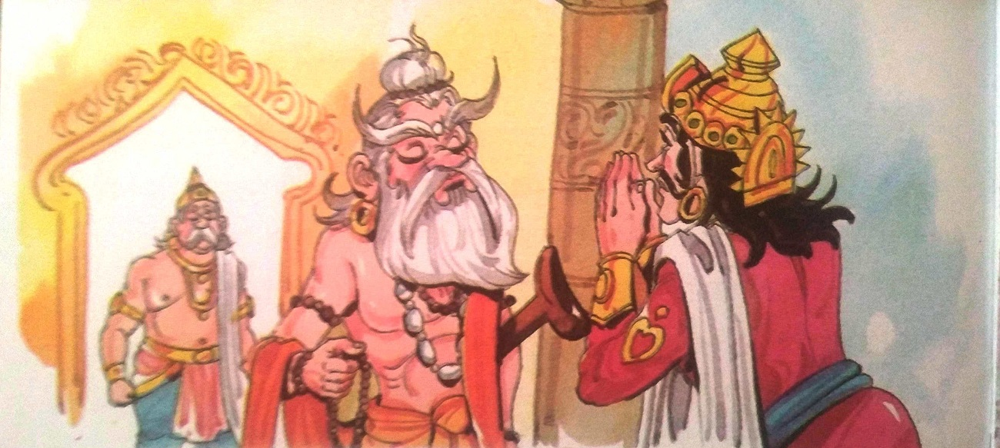
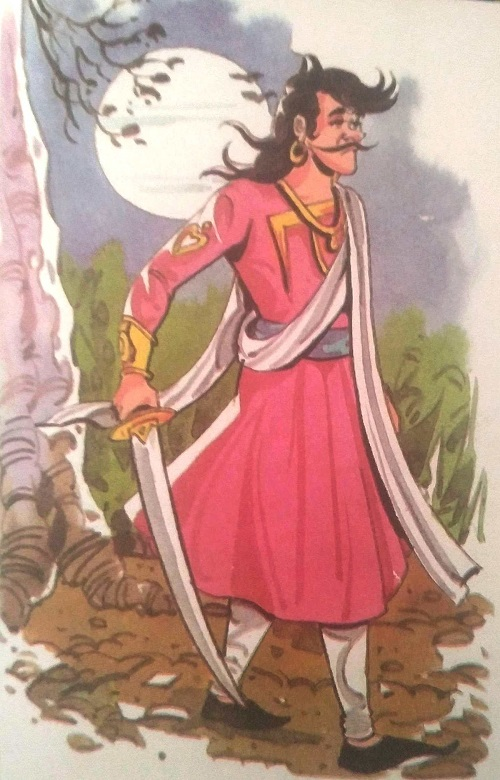
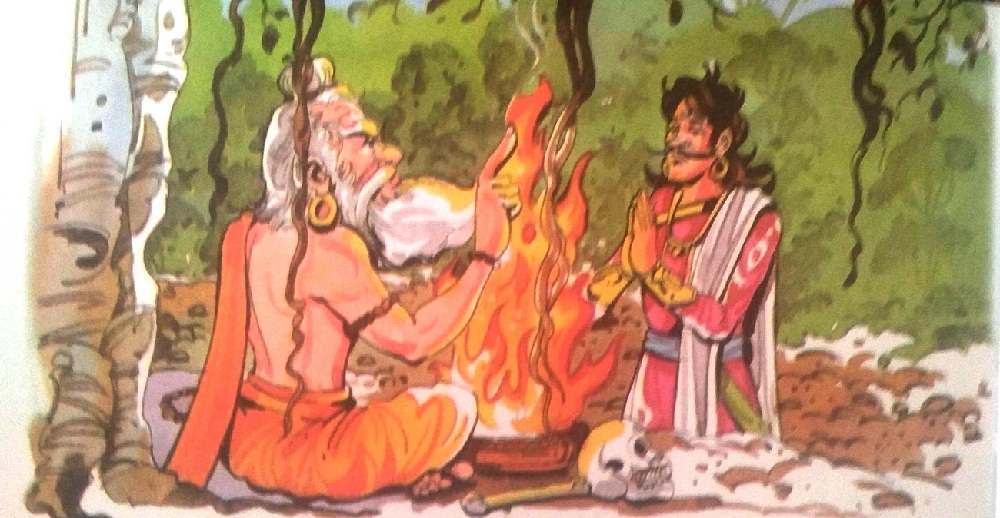

૧-વિક્રમ અને વેતાલની મુલાકાત

ઘણા સમય પહેલા રાજા વિક્રમાદિત્ય ઉજ્જૈન પર શાસન કરતા હતા. તે ન્યાયી અને ઉદાર રાજા
હતો. તે પોતાની પ્રજાના સુખ-દુઃખ પ્રત્યે ખૂબ જ સચેત હતો. તેમની પ્રજાને તેમના પ્રત્યે અપાર સ્નેહ
હતો. તેમના રાજ્યમાં ચારે બાજુ સુખ અને શાંતિ હતી. એક દિવસ રાજા વિક્રમાદિત્યનો દરબાર યોજાયો.
એટલામાં એક સાધુ આવ્યા. તેના હાથમાં કસ્ટર્ડ સફરજન હતું. તેણે ચૂપચાપ કસ્ટર્ડ એપલ રાજાને આપી દીધું
અને ચાલ્યો ગયો. આ પછી, ઋષિ દરરોજ રાજાના દરબારમાં આવતા અને તેમને કસ્ટર્ડ સફરજન ભેટ આપતા અને
ત્યાંથી જતા. સાધુ ક્યારેય એક શબ્દ બોલતા નથી. ઋષિ દસ વર્ષ સુધી આ રીતે રાજાને ફળ આપતા રહ્યા. ઋષિ
દ્વારા આપવામાં આવેલ ફળ રાજા પોતાના ખજાનચીને આપતા હતા. એક દિવસ રાજાએ તેના ખજાનચીને ફળ આપવાને બદલે
એક વાંદરાને આપ્યું. વાંદરાએ ખાવા માટે ફળના બે ટુકડા કરી નાખ્યા. તે તૂટતાં જ તેની અંદરથી એક
અમૂલ્ય રત્ન બહાર આવ્યું.

ઋષિએ આ વખતે તેમનું મૌન તોડ્યું અને કહ્યું, "રાજા! હું એક ધાર્મિક વિધિ કરી રહ્યો છું.
તે વિધિ પૂર્ણ કરવા માટે મારે તમારા જેવા બહાદુર અને હિંમતવાન વ્યક્તિની જરૂર છે. હું ઈચ્છું છું કે
તમે મારી વિધિ પૂર્ણ કરવામાં મને મદદ કરો. મદદ કરો."

"હું તમને વચન આપું છું કે હું તમને ચોક્કસ મદદ કરીશ. મને કહો, મારો આદેશ શું છે?" રાજા
વિક્રમાદિત્યે પૂછ્યું.
"રાજા! આજથી બરાબર એક અઠવાડિયું અમાવસ્યા છે. એ દિવસે હું સ્મશાનની મધ્યમાં આવેલા
વટવૃક્ષ નીચે તારી રાહ જોઈશ. ત્યારે જ હું તને કહીશ કે તારે શું કરવાનું છે," મુનિએ કહ્યું.
"ઠીક છે. હું તે દિવસે આવીશ," રાજા વિક્રમાદિત્યને વચન આપ્યું. રાજા પાસેથી તેણે આ વચન
લઈને મુનિ ચાલ્યા ગયા.
|

|
અમાવસ્યાની રાત આવી. રાજા વિક્રમાદિત્ય જવાની તૈયારી કરી. તેણે તેની
ચમકતી તલવાર ઉપાડી
અને મધ્યરાત્રિએ મહેલ છોડી દીધી અને કાળી, અંધારી રાતમાં સ્મશાન તરફ પ્રયાણ કર્યું.
થોડી જ વારમાં રાજા વિક્રમાદિત્ય સ્મશાનમાં ઊભા હતા. બધે આગની જ્વાળાઓ
ઉભરાતી હતી.
હાડકાં, હાડપિંજર, માંસ વગેરે ચારે બાજુ વિખરાયેલાં હતાં. શિયાળ વગેરે નિશાચર
જીવોના અવાજો રાત્રિના
મૌનને વીંધી રહ્યા હતા. ત્યાંનું વાતાવરણ ભયાનક લાગતું હતું. પરંતુ રાજા
વિક્રમાદિત્ય કોઈ પણ જાતના
ડર વિના સતત આગળ વધી રહ્યા હતા. તેણે પોતાના હાથમાં તલવાર પકડી રાખી હતી. રાજા
વિક્રમાદિત્ય તરત જ
વટવૃક્ષની નીચે જ્યાં ઋષિ બેઠા હતા ત્યાં પહોંચી ગયા. રાજા ઋષિ પાસે ગયા અને
કહ્યું, "મહાત્મા! હું
આવ્યો છું. મને કહો, મારે શું કરવાનું છે?"
'રાજા! તમે તમારું વચન પાળ્યું, મને આનંદ થયો. તમે અહીંથી દક્ષિણ તરફ
જાઓ. ત્યાં તમને
બીજું એક મોટું વટવૃક્ષ દેખાશે. તે ઝાડની ડાળી પર એક મૃતદેહ લટકી રહ્યો છે. તમારે એ
લાશને ઝાડ પરથી
નીચે ઉતારીને મારી પાસે લાવવી પડશે. તો જ મારી વિધિ પૂર્ણ થશે. ઋષિએ કહ્યું, "હું
તેમના વિના કોઈ
ધાર્મિક વિધિ કરવાનું વિચારી પણ શકતો નથી." ઋષિની આજ્ઞા માનીને રાજા વિક્રમાદિત્ય
શરીરને એકત્ર કરવા
દક્ષિણ તરફ ચાલવા લાગ્યો. ચાલવાનું ચાલુ રાખતાં તેઓ તરત જ બીજા વટવૃક્ષ પાસે
પહોંચ્યા. ત્યાં
પહોંચ્યા પછી તેણે ઝાડ પર નજર નાખી તો એક લટકતી લાશ જોઈ.
|
તેઓ તરત જ ઝાડ પર ચઢી ગયા. તેણે મૃતદેહને પોતાના ખભા પર મૂક્યો અને તેની સાથે નીચે
આવ્યો. પરંતુ પછી શરીર તેના ખભા પરથી સરકીને જમીન પર પડી ગયું. પીડાને કારણે તેના મોઢામાંથી ચીસ
નીકળી ગઈ. રાજાએ વિચાર્યું કે મૃતદેહમાં હજુ થોડો જીવ બચ્યો છે. તેઓ લાશને ઉપાડવા નીચે ઝૂકી ગયા, પણ
લાશ હસી પડી અને ઝાડ પર લટકી ગઈ. રાજા સમજી ગયા કે લાશ કોઈ બેતાલના તાબામાં છે. રાજા વિક્રમાદિત્યએ
હાર ન માની અને ફરીથી મૃતદેહને પકડવા માટે ઝાડ પર ચઢી ગયા. પછી તેણે તેને નીચે ઉતાર્યો અને તેને ખભા
પર લઈને ચાલ્યો ગયો.

વેતાલાએ બોલવાનું શરૂ કર્યું ત્યારે તેઓ થોડા જ ડગલાં ચાલ્યા હતા. તેણે કહ્યું, "રાજા,
તમે મને ઝાડ
પરથી નીચે ઉતારવા માટે ખૂબ જ મહેનત કરી છે. તમે થાકેલા જ હશો. આવો, હું તમારો થાક દૂર કરવા માટે
તમને એક વાર્તા કહું. પણ બોલવાની કાળજી રાખજો. જો તમે તમારું મોં ખોલશો તો, હું પાછો ઉડીશ અને ઝાડ
પર લટકીશ."
રાજા વિક્રમાદિત્ય કશું બોલ્યા નહિ.
|